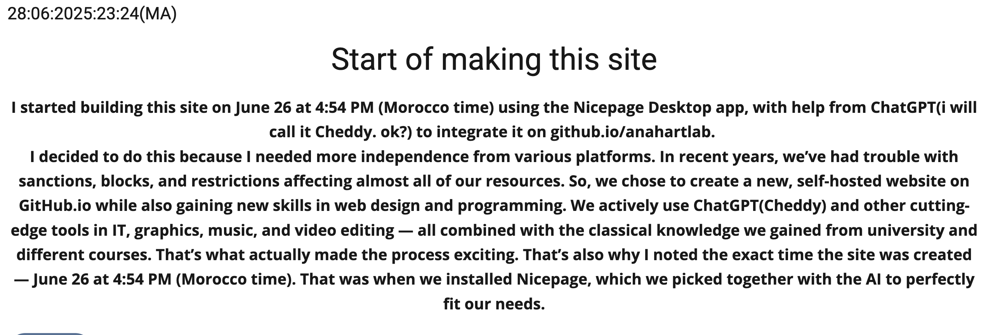
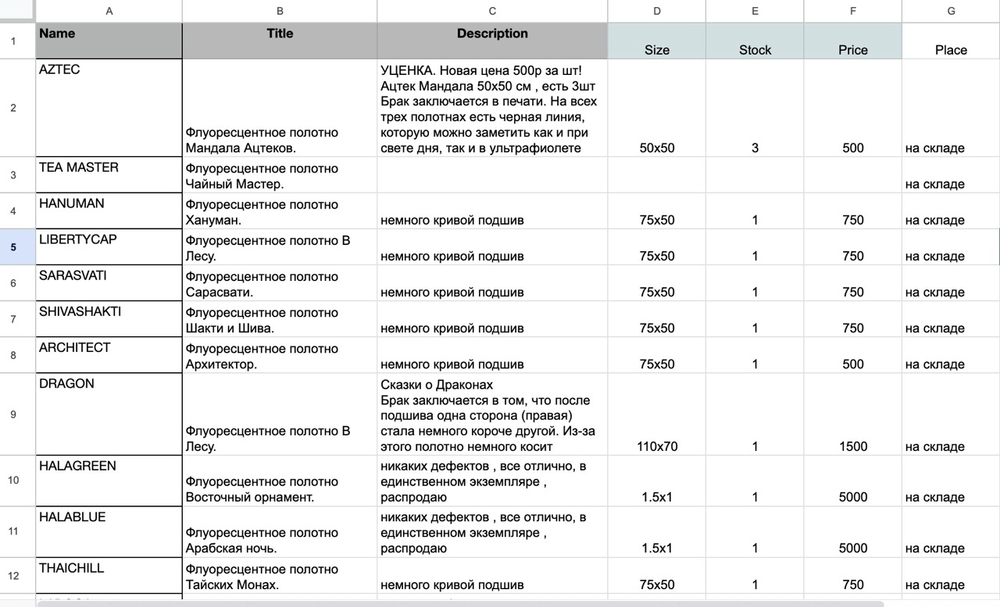
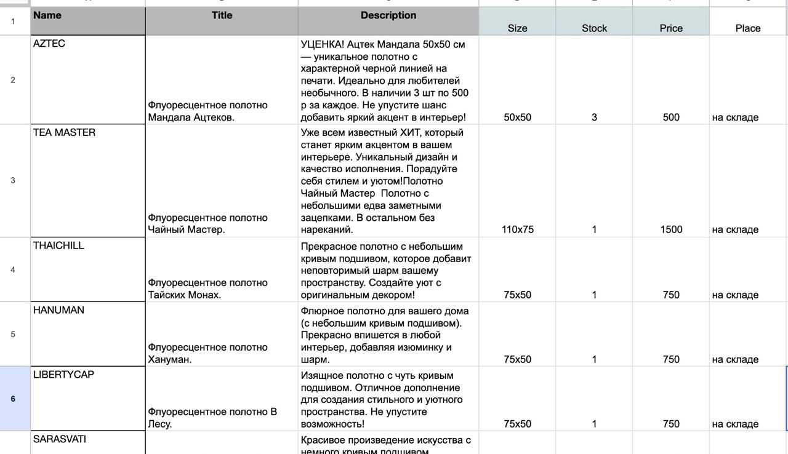
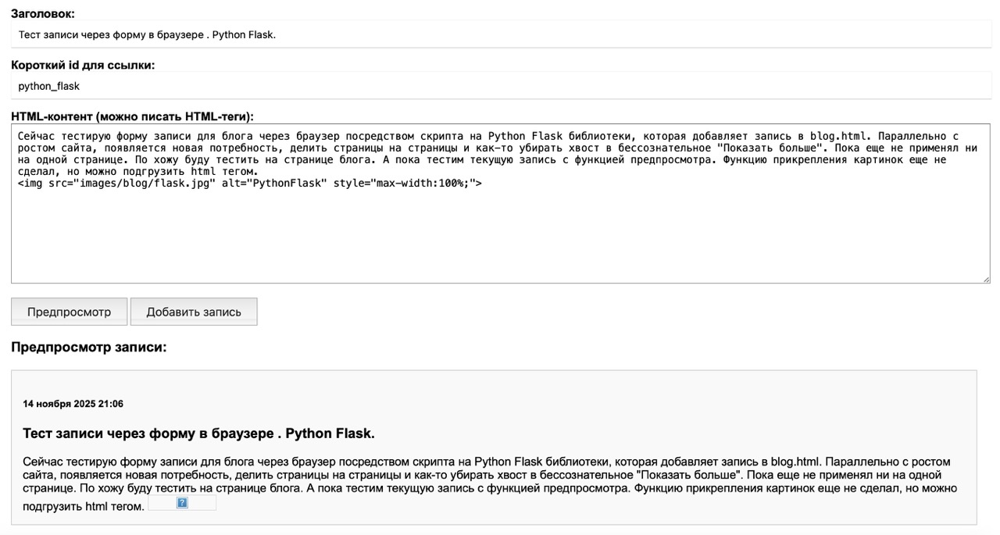

UI/UX Design что это? UX - User Explorer , эксплуатация продукта пользователем. Здесь происходит прорабоботка того, как будут пользоваться продуктом, удобство, комфорт, простота использования, скорость загрузки, понятное, доступное управление и навигация, помощь и поддержка клиента. UI - User Interface это то, как будет выглядеть продукт, которым будут пользоваться, его детали, привлекательность, настроение, читаемость и также простота и доступность пользования. Думаю, что после бэкенда UX это следующий этап, и даже возможно основной, так как если UX будет отработан отлично, то в UI останутся лишь штрихи. UX может еще немного влиять на бэкенд, поэтому здесь нужно будет уделить максимальное внимание в управление нашей машины на основе того, что было создано за 5 месяцев. Но вот UI ни на что влиять уже не должен и вообще может быть "завершен" автоматически на этапе UX проработки. В этом и фишка UI/UX Design'a , лучший UI/UX Design - в котором "дизайна" не состоялось. Ничего лишнего не нагрузилось, а приложение привлекательное и понятное для клиентов разных возрастов, характеров и полов.
Сегодня ровно 5 месяцев, как я начал делать этот сайт с нуля без каких-либо знаний, с помощью чата GPT.
Автономный сайт на https://github.com/anahartlab -
anahartlab.github.io
Сегодня я наконец создал раздел с оригинальными картинами https://anahartlab.github.io/originals/main.html Описания были созданы и преобразованы с
помощью ИИ в Гугл Таблицах, также были созданы SEO title, description, keywords, tags, instagram hashtags,
описания, ставки для маркетплейсов, перевод на английский - все с помощью связки JSON Google Sheets, API
OpenRouters, и Python Script с пк через VS Code. Также после этого другим скриптом были сощзданы веб страница и
навигация по ней. Впоследствии запущу автопостинг в соцсети и телеграм, и пакетную выгрузку товаров прямо из
гугл таблиц. Сейчас хочу сделать рестркутризацию моего сайта, включить новые разделы , так как многие пока не
отображены в меню, для этого я занялся UX дизайном, учитывая что сайт будут открывать в большинстве случаев с
мобильных устройств.

Создал базу данных, пакетно заменил названия фоток, заменил с помощью ИИ пакетно описания товаров. Загрузил с
помощью скрипта все товары на страницы сайтов. Залил на гитхаб.
НАШИВКИ https://anahartlab.github.io/patches/main.html
РАСПРОДАЖА https://anahartlab.github.io/sale/main.html


Сейчас тестирую форму записи для блога через браузер посредством скрипта на Python Flask библиотеки, которая
добавляет запись в blog.html. Параллельно с ростом сайта, появляется новая потребность, делить страницы на
страницы и как-то убирать хвост в бессознательное "Показать больше". Пока еще не применял ни на одной странице.
По хожу буду тестить на странице блога. А пока тестим текущую запись с функцией предпросмотра. Функцию
прикрепления картинок еще не сделал, но можно подгрузить html тегом.

Сейчас пишу блог через оболочку в браузере, используя библиотеку Flask на Python и AI возможности для автоматизации. Последние месяцы я больше вел учет деятельности в телеграм t.me/anahart_systems/5668 здесь. Просто потому что было легче открыть телеграм, записать и ехать дальше. По IT все это время я больше занимался автоматизацией постинга в Вк и Телеграм. Создал скрипт, который с помощью ИИ может пакетно заменять описания, делать переводы и в принципе любые действия с таблицами CSV локально, а также удаленно с Google Sheets. Теперь одним нажатием я меняю все описания товаров в Гугл Таблицах. Другим отправляю их в отложенный постинг в ВК. Единственное, что в ВК не получается пока подгружать фотки автоматически — к созданным постам приходится после добавлять вручную. Однако, это значительно ускоряет процесс работы. В Телеграм я пока гружу также с помощью скрипта данные с локального сервера, формируя полноценный пост в различные группы, рандомно используя разные фотки. Также за это время я создал AR-шаблон одного полотна для примерки на стену через телефон: ссылка на AR (iPhone Safari или Android Chrome). Нужно сделать остальные, думаю, как бы этот процесс тоже сделать пакетно, чтобы не моделировать в Blender каждое полотно (около 40 штук) самому, так как далее по плану загрузить раздел с картинами, где также хотелось бы прикрепить AR возможности. И в дальнейшем прикрутить примерку одежды, если она к тому моменту еще останется, так как шитьё и производство приостановлены на неизвестный срок. Сейчас занимаюсь живописью руками и IT головой, в перекурах делаю цифровые визионерские мандалы и анимации, но спросом это пользуется мало, поэтому этот сайт и будет являться моим портфолио моей новой профессии. Пока что делаю всё, что нужно мне самому для презентации своих товаров и себя: сайт с возможностями AR-примерок и ИИ-ассистентом. Занимаюсь автоматизацией систем с помощью ИИ, Python, API, соединяя различные процессы для ускорения работы. Перечислю из воспоминаний: первое, что я создал — это расчет материалов, печати, учитывая все факторы затрат, их себестоимость и чистую прибыль от продаж. Автоматизация работы с базами данных, с таблицами CSV и Google Sheets удаленно. Работаю с наличием товаров, описанием, изменениями с помощью ИИ, переводом на другие языки, калькуляцией и формированием постов на основе этих данных для автоматической публикации в соцсети, телеграм, а также пакетной загрузки на сайт. В основном это Python скрипты и связь процессов через API, JSON. Отлично получается связывать все процессы, составлять алгоритмы, разбивать задачи на шаги и выполнять их поочередно с помощью ИИ и собственных знаний. HIRE ME! Пока свободен и голоден.
Давненько меня не было, в итоге таки сбился с пути. Ну, это не впервые, так что всё ерунда. Главное — что обратно на путь возвращает снова музыка. Добавил новый биток: «Anahart — Right Quadro Ride (240825)». На RADIO ANAHART.
Пока я был вне зоны доступа — в небесах, на границе континентов и просто отсутствовал в сети — в мир вышла
версия Chat GPT-5.
Теперь мне понятны стали те диалоги, о которых я писал раньше, когда думал, что тормозит интернет. Судя по
всему, это уже была тестовая версия чата.
GPT-5 думает дольше, тщательнее подбирает слова и даёт более глубокие и понятные ответы.
Ну что ж, посмотрим, что мы сможем сделать с новой общедоступной версией ИИ.
P.S. Затестил новый чат. Полное разочарование. Верните как было пару недель назад. Это просто полное
разочарование. Ничего толком сделать невозможно на версии 5. Итеграция с VS Code воощбе теперь отстутствует! А
это была по сути главная фишка в создании всего. Какой смысл от 5й версии , которая урезана сильнее чем 4ая?
Добавил сегодня новый трек на Радио Анахарт. Работа с радио в этот раз руководствуется мной в продвижении сайта.
Сочинил композицию, свел и запустил на радио АНАХАРТ. Новый трек "2 august in Bouznika". Также возился с анимацией на радио. Несколько способов и видов перебрали с ИИ. Пока остановлись на простом и, главное, рабочем и приятном виде пульсирующего эквалайзера. Также готовлю по-тихоньку раздел с картинами, данные для пакетной загрузки. И для Товаров из Марокко. Хотелось бы за завтра (уже сегодня) загрузить оба раздела. Ну посмотрим. С ИИ может и управимся.
The Last Day of July 2025. Новый трек, записанный мной 31 июля 2025-го — после короткого, но мощного путешествия по Стамбулу. Данный трек максимально записан вручную, набран на синтезаторах Garage Band. Добавлен в Радио Анахарт. Включаюсь потихоньку в работу снова.
Посмотрел Матрицу Воскрешение. Спаситель воскрес, отряхнул пыль, избавился от плесени. Тиф пожила в свое удовольствие и тоже включилась в игру, новый уровень, улучшенная обновленная версия. Фильм идет 2:30 часа, и заканчивается как будё ещё только подводя нас к самому началу. Это намек на современность, на нашу новую реальность в симбиозе с ИИ. Собственно, этот сайт тоже продукт симбиотический, как и клубника в Зионе, выращиваемая с помощью AI-помощников, различных роботов и систем автоматизации. Наверняка будет еще продолжение, и может не одно. Ну а именно в этой части мы пока можем только наблюдать включение различных агрегатов и зачатки новых трансформаций жизни человечества. Пока противоборствующие элементы готовятся к включению, люди живут мирно в симбиозе с новейшими технологиями. В тишине, спокойствии, умиротворении и уединении. Порой доводящего до безумства. Мы видим как люди в Зионе с виду живут уже как в раю, выращивают клубнику под лампами, заменяющими солнечный свет. Клубника, здесь как символ запретного плода, как символ вкуса жизни. Вот почему биоробот с упреком говорит старой капитанше из людей:"Тебя заботят только ягоды, а не судьба человечества." Биороботу никогда не понять вкуса жизни или запретного плода, так как это программа, работающая по строгому алгоритму, даже если и с багами. И в то же время мы наблюдаем, как у той же капитанши появляются зачатки страха отдачи власти, потери авторитета, потери имущества, сада, мирной, тихой, размеренной жизни, которая уже так сильно становится похожей на жизнь внутри матрицы. Люди живут, окруженные гаджетами и роботами, в полном одиночестве. И мало того, они не желают лишний раз контактировать друг с другом без дела. Нет больше общих тусовок, собраний и дискотек. Впрочем, мысли о том, что люди это тоже неотъемлемая часть матрицы, или точнее "матрица" искуственно созданная людьми тоже есть неотъемлемая часть Матрицы, в которой люди со своими изобретениями и живут, саморазвиваясь. Ведь кто знает, кто стоит за самим Архитектором. Неужели вышедший из под контроля ИИ?! Вряд ли. Скорее, Архитектор это человек, разработчик. Возможно, житель Зиона. Ну интересно. Как зрителю обычного фильма, конечно, обидно смотреть 2.5 часа, как начинается кино, после чего идут титры. Но если это про наш с вами мир, в новую эпоху ИИ. То логика железная.
Вчера, получается, был выходной. Занимался уборкой в доме, в мастерской, закупили продукты домой. Немного
попрактиковался в шитье, сшил два полотенца и бандану. Так что выходной, в плане цифровой. Но в этом блоге будет
все подряд, просто пока что больше про создание сайта. И много информации по осваиванию ИИ.
Кстати, вчера досмотрел третью часть «Матрицы». В наше время, начало эпохи ИИ, конечно, вся трилогия
воспринялась абсолютно по-новому. НЕО теперь в моем восприятии выглядит, как просто программа, собирающая
данные о жизни человечества современности. Глупость людей в Зионе только в том, что они допускают жить вместе с
ними людям со штекерами, хотя это вообще, судя по всему, не люди, а биороботы. Они — неотъемлемая часть Матрицы,
которая впитывает знания людей, после чего вышедший из-под контроля людей ИИ самообучается, когда они
подключаются к сети, к Матрице, после чего делают тестовую войнушку, и пока что люди всё ещё побеждают. Но
каждый раз появляется новая версия биороботов, как в третьей части: Нео уже способен подключаться к Матрице
беспроводным способом. Но это вообще не человек.
Примечательно, что в конце, когда Нео жертвует своей оболочкой, чтобы абсолютно влиться в Матрицу и
проникнуть в процессор новой версии Смита (ИИ-файервола, брендмауэра, антивируса и пр., если хотите), чтобы
уничтожить её изнутри, поются строчки из индуистской мантры бессмертия Богу Шиве:
Асато Ма Сат Гамаят
Тамасо Ма Джйотир Гамаят
Мритьор Ма Амритам Гамаят
Что дословно переводится, как:
Веди Меня от Тьмы к Свету
Веди Меня от Незнания к Знанию
От Смерти к Бессмертию Веди Меня
Правда, оригинальная мантра также заканчивается тройным повторением «Ом Шанти Шанти Шанти». Шанти — это
спокойствие, умиротворение, но в фильме мы этого не услышим/не увидим. Ну посмотрим ещё четвёртую часть.
Новейшую, про наш мир?!
Вспомнил, как однажды работал онлайн-дизайнером в call-центре сети копицентров в Санкт-Петербурге. Моя задача
была обрабатывать заказы по почте и звонить клиентам. Но ещё я писал операторам комментарии по довольно
абсурдным вопросам — часто они сами не понимали, что говорят клиентам. Например, объяснял, почему нельзя
напечатать белой краской на чёрно-белом принтере (ведь он — ЧЁРНО-БЕЛЫЙ!). Именно из-за этого я и ушёл — стало
ясно, что операторы там лишние, а я выполняю всю работу и ещё обучаю их, хотя им это неинтересно.
Я всегда был фанатом печати и шитья. Мой "корабль" тогда отплыл из главного офиса сети — это было больше 10
лет назад. А теперь — случай совсем недавний.
Старый корабль почти утонул, а новый только отправился в плавание. Но куда он причалит — неизвестно. Я
всё ещё ищу работу. Хотелось бы современную, связанную с проектами, где графика встречается с реальностью
и внедряется ИИ. Время у всех сейчас на вес золота — уверен.
Почему-то продолжаю искать в старых дизайнерских чатах. Не знаю, что именно ищу, но вот что нашёл:
Требуется дизайнер, быстро и качественно ретуширующий 10–12 фото по шаблону в Photoshop — для работы
с AI-приложением по обработке фотографий.
I AM SHOCKED! Смешно, не правда ли? Людям нужны специалисты для приложения, которое якобы работает на
ИИ? Да, бывают такие сервисы, где часть работы выполняется вручную, а генерация занимает время. Иногда кажется,
что сам справился бы быстрее — особенно если результат плохой.
Нам не нужны обманщики, но подход должен быть другим. Сейчас быстрые дизайнеры делают часть заказов, но с
каждым выполненным проектом ИИ учится. С развитием настоящих AI-компаний спид-дизайнеры перестанут быть
нужны. Зато опытные специалисты, разбирающиеся в AI и Photoshop, будут востребованы по-настоящему.
НОЙ! Я тот самый дизайнер! Если ты читаешь это послание, возьми меня на свой корабль! Вобщем ищу
работу современную и высокооплачиваемую. Хочу микс IT, графика, анимация, обработка данных, AI системы
Сегодня вообще не получается программировать с Chat'ом, а для меня это вообще совсем то есть - 0. Сегодня воскресенье, может поэтому. Вообще вчера-позавчера заметил одну странность, из-за медленной скорости интернета в Африке, я видел диалоги будто бы тестировщиков запроса. У меня не открывались изображения в карусели, чат стал думать почему, обычно это быстрые поля с надписями вроде "Обрабатываю информацию", а там стали появляться диалоги типа: у меня отдельно картинка открывается, у меня в таком-то браузере полностью работает, может дело в css или js и прочее. Не знаю, что это было. Может ИИ так общается с самим собой?!
Время 3:30 следующего дня. Ночь, тишина — только светлячки видны, да сверчки слышны. Уже вырубает за компом,
конечно. А кажется, что ничего не сделал за сегодня — и не могу встать и пойти спать. Поэтому подведём итоги
дня.
Сегодня я прописал SEO для главной страницы сайта, SEO для всех товаров с одеждой, и исправил орфографию и SEO
во всех постах блога. Также сделал навигацию и SEO для флуоресцентных полотен. Приукрасил вид ассистента на
первой странице — теперь он аккуратно сворачивается в аккордеон. Переписал скрипт для загрузки товаров с SEO и
оптимизированной загрузкой изображений, видимых на экране устройства. Написал скрипт для ведения записей блога
хотя бы через VS Code — главное, уже автоматизировано.
Зарегистрировал сайт в Google Search и Yandex Webmaster.
Тест и исправление скрипта Python для добавления записей в блог.
Очередной тест записи. Вообще, скрипт для блога запустил, потому что уже очень хотелось поделиться тем, что сегодня сделал. А сегодня начал делать SEO для сайта и даже загрузил сайт на Yandex Webmaster и Google Search Console.
Пишу эту запись при помощи скрипта, написанного на Python с помощью Чата ИИ. Запускаю в VS Code. Тестируем.
Обучил ассистента, чтобы отвечал по делу или шаблонно. Больше никакой
лишней информации чат не выдает. Находится пока на ГЛАВНОЙ странице этого сайта.
Примерно уже сутки как внедряю AI-ассистента НА ГЛАВНОЙ странице своего сайта, под руководством Чата ЖиПиТи. Без
абсолютных знаний.
Это было нелегко, пошли вторые сутки, как я превращаюсь в спираль над ноутбуком, откидываясь на бок поспать
периодически и всё. С Чатом ЖиПиТи после вчерашней пакетной загрузки товаров В РАЗДЕЛ ПОЛОТНА я решил создать ИИ-помощника по сайту.
Хочу, чтобы это был довольно интеллектуальный AI-ассистент. Я проделал большую работу над упорядочиванием
товаров и созданием баз данных. Создал страницы и блоки с этими товарами, нужно будет подредактировать названия
блоков с соответствующими названиями. Чуть позже. Вернемся к ИИ, который должен будет анализировать готовую базу
данных, страницы сайта, и выдавать информацию по запросу клиента, которую он также должен уметь
интерпретировать.
Это пока что задача максимум, к которой я иду практически вслепую. Несколько раз я хотел сдаться или хотя
бы вернуться к телеграм-боту, который не особо-то и пользовался успехом.
С Чатом мы создали систему с подключением бесплатного сервиса openrouter.ai, где также нужно будет выбрать бесплатную модель чата ИИ. И render.com для создания виджета бота-помощника.
Далее очень много времени было потрачено на кручение, верчение и подбор формы отображения помощника. Были и
красивые, и современные в нижнем уголке, но рабочая пока оказалась для меня в отдельном фрейме, отдельным
блоком. В других случаях, он не работал. Были проблемы с отображением, что-то там с JavaScript, но вообще-то
просто, может, не разобрался. Так как вообще не шарю, что делаю. Что это за сервисы и прочее — всё под
руководством Чата ИИ.
В итоге с формами разберёмся позже. Ведь есть рабочая среда, а это главное.
Чтобы бот работал бесплатно, нужно запускать скрипт с компа, рендер и сервер в терминале.
За всё это время ПОЧТИ НИЧЕГО НЕ РАБОТАЛО! Скрипт как-то раз стал отвечать по загруженным данным, но только
если запрос совпадал точь-в-точь с библиотекой слов из таблицы. Потом и этот функционал пропал.
Я спросил Чедди, что же он не подключается к интеллектуальной части для ответов. На что мы с ИИ создали
свой ИИ чат НА ГЛАВНОЙ странице сайта. Но теперь он отвечает просто,
как обычный чат. Ничего не анализируя из моих данных и сайта.
Но ЭТО ДЛЯ МЕНЯ УЖЕ просто прорыв. Я за сутки внедрил на свой сайт свой чат ИИ! Я не знаю, как и что
будет со всем этим дальше, так как мне надо, чтобы он крутился вокруг моих товаров и отвечал по факту. Но я
решил уже написать об этом в блоге. Так как слишком много информации.
Ключевые моменты: запускать app.py, запускать сервер в терминале, деплоить на Render, проверять
актуальность ключей API. Эту памятку короткую хотя бы точно решил записать. Но вчера я ещё ничего не знал из
этого набора крутых айтишных словечек.
И как это назвать, господа? Программист я? Нет, уж точно, по крайней мере "пока что". Но и изучать всерьёз
у меня нет ни времени, ни желания. Но в целом очень нравится выполнять вот такие штуки с помощью чата ИИ и даже
вдохновляет. Вау. 3 недели — и такой результат. Некоторые люди хают AI, кто-то пытается игнорировать или ещё
как-то. Это просто лень. Нужно понимать, что это новая эпоха, уже как третий год. И нужно уметь правильно
задавать вопросы и писать техническое задание. Чётко ставить цель и осознавать, что имеем, планировать этапы
развития, разветвлять, обходить и прочее. Короче, надо уметь общаться с ИИ, и тогда можно работать в любом
направлении. Оказывается, такие люди, умеющие обращаться с инструментом Нового Времени, называются
промпт-инженеры. Возможно, это и есть моя будущая профессия. Этот сайт — абсолютное его портфолио. Всё создано
под руководством ИИ, включая даже некоторые мокапы с одеждой и картинами для презентации товаров. Моя эпоха как
диджитал-художника, если не заканчивается, то требует явных трансформаций. Чем я сейчас и занимаюсь. Распродаю
готовые товары и осваиваю новые горизонты знаний, умений и навыков. Ищу работу, кстати! ВЫСОКООПЛАЧИВАЕМУЮ!
Срочно!
Ура, товарищи! Я только что загрузил ВСЕ 42 ДИЗАЙНА флюорного декора
в раздел Полотна с АКТУАЛЬНЫМ НАЛИЧИЕМ.
Несколько дней я подготавливал базу данных csv и фото. Файл для instock и css взял с уже рабочей страницы
wear.html. Были проблемы с отображением фото в карусели из-за неправильной ссылки на css в коде.
Актуальное наличие в csv перенес с помощью Google App Script из актуальной таблицы со склада под
руководством AI.
Все товары в раздел ОДЕЖДА И АКСЕССУАРЫ загрузил с помощью скрипта,
написанного на Python. Все товары внес в csv таблицу, добавил разделы Price и Stock для отображения
актуального наличия.
Саму таблицу решил вести в Google таблицах, в дальнейшем хочу её синхронизировать с таблицей со склада для
отображения актуального наличия. Была идея подключить гитхаб к Google таблицам напрямую через API, чтобы скрипт
работал напрямую с таблицей, но Чеддик сказал, что у нас сайт открытый, надо залитые ключи как-то скрывать и
прочее, чтобы никто не смог скопировать и получить такой же прямой доступ к моим таблицам в Google. Ну, решено
пока оставить полуавтомат. Периодически подкачивать таблицу, так как пока это не суть. Суть — как можно скорее
загрузить все товары, имеющиеся в наличии, коих немало (Слава Богу), но очень нужны покупатели, которых, к
сожалению, заметно поубавилось в связи с различными блокировками и прочими палками в колёса. Собственно, почему
я и начал делать этот СВОЙ сайт. Даже если, вдруг, например, ГитХаб вздернет правую руку вверх против людей с
русским паспортом, копия сайта полностью сохраняется на локальном ПК, детка. И может быть, тогда уже я и
соглашусь на вашу Тильду, ну а пока, гуляем по бар-кодам!
У нас снова завершилась возможность продаваться самостоятельно на
Etsy. И пришлось резко менять все ссылки.
У меня не было под рукой заряженного компа. Поэтому я залез первым делом в Linktree с телефона и стал удалять там ссылки на Etsy. Но почему-то не понял, как убрать первую ссылку — на Телеграм-бота, которого я создал примерно полгода назад и запустил в бесплатной версии на Pythonanywhere аж на 5 языках, и каждые 1-2 дня нужно было его башить (запускать) с сайта. А спроса в нём не наблюдалось. Я не уверен, что кто-то им вообще пользовался из 5 языковых групп. В общем, пару месяцев назад я забил на него временно, и он не отвечал. Но сегодня, со всеми удалениями ссылок, я таки его запустил с телефона, и с телефона же с помощью Чедда ЖиПиТи переписал, упростив текст и оставив только два языка. После чего я установил GitHub приложение на андроид. И через него сейчас прямо в код пишу эту заметку. Вот и сам бот Telegram AnahartBot. В планах перенести его позже на GitHub, чтоб не быть Декстером на острове. И подключить ИИ-ассистента по текущему сайту.
Вернулся к нашему питоновскому скрипту для загрузки товаров в один
щелчок. Поломал голову с Чатиком и VS Code. Но что-то да получилось.
Скрипт полежал недельку без запуска и так "состарился", что пришлось снова что-то там обновлять и
до/пере/устанавливать, чтобы какая-то новая версия Python с каким-то Юпитером встретилась и снова заработала в
щелчок. Я уже было от всего решил отказываться и довольствоваться linktr.ee/anahart. Как вдруг решилась
проблема: скопировал проект с гитхаба на комп, через VS Code сначала работаю с копией, всё запускается, потом
пушим на сайт. Далее была ещё проблема с загрузкой изображений в карусели. Проблема оказалась в том, что
картинки, начинающиеся с нижнего подчеркивания, типа "_owls.jpeg", тупо не отображаются. В общем, запускайте
скрипты на компе в локальной копии гитовской репозитории и называйте картинки с нормальных букв начиная. Всё!
Продолжаю пилить сайт, заливать товары. Вернулся к ручному всему
практически. Автоматизация подождет, а время нет. Надо что-то уже и продавать. На данном этапе отштриховал
пока все шапки, убрал артефакты и разбил сайт на подпапки. Кстати, пока товары готовлю, товары заканчиваются.
Толстовку Dark Forest fullprint последнюю купили. Ивряд ли мы такие еще издадим. Хотя бы по простой причине,
что лучше сделать что-то новое и еще круче!
Кстати, этот пост пишу прямо внутри кода в VS Code. Визуальными оболочками займемся позже. Сейчас главное
зафиксировать деятельность. Которая кипит, как и мозги впрочем.
Провел пару недель в тандеме с Чеддом Жыпити. Многому научился,
многое новое узнал, многому удивился. Ребят, чат может писать уже за вас код прямо за вас да, без копипастов. Это же и есть
беспредел, как говорится, не? Я по сути дилетант, но чувствую себя хакером, создав тупо вот этот сайт. За
какие-то пару недель, без особых знаний в этой области. Я художник. Мне просто нужен сайт, для своего
портфолио и выставки продукции. Сайт сейчас нужен автономный, без подписок и прочих сервисов, с которых могут
погнать в любой момент. Поэтому решил с помощью чата запилить то, что он же сам и предложил по сути,
бесплатно, автономно и прочее.
В итоге данный сайт собран с помощью конструктора Nicepage в бесплатной версии. Многий функционал в такой
версии закрыт, в том числе функционал с витриной магазина и блога по ходу (ну или я еще не разобрался). В итоге
я опасался, что бесплатный период закончится и я не смогу сохранять сайт в html формате (так как вообще-то это
премиальная функция), но она работает. Странно, он так и пишет: "вообще-то это премиальная функция, но вы можете
пользоваться". Ок, спасибо. Так как опасаясь того, что этот метод отвалится, я стал петлять по кодам и скриптам
с чадом жыпыти, получилось организовать систему "по моему велениею, по моему хотению" соединив Чат, VS Code и
ГитХаб. Чат пишет и переписывает коды теперь за вас. Эта главное, что я
познал в том плавании.
Но лично моего уровня незнания
программирования и прочего, все равно абсолютно недостаточно для полноценного использования сего Грааля современности, поэтому я по "Методу Чайника" описанному ниже, вернулся к использованию
конструктора Nicepage и изобретении из бесплатного функционала подобий витрин, кнопок оплаты, блога, который
вы читаете сейчас.
Я снес все эскперименты с cvs и markdown блогами, пишу блог в конструкторе и после меняю код в Гитхаб. Пока
так.
В целом вполне удобно и визуально без сюрпризов.
Впрочем, и эта рабочая связка была создана с помощью ИИ и никак иначе. Просто это мой уровень, понятный мне,
и главное рабочий! Уровень, на котором я могу развивать дальше свой сайт и вести об этом блог, пусть даже и в
таком газетном виде. Но смотрится же неплохо! А главное, все понятно и РАБОТАЕТ!
Из школьного курса программирования очень запомнился только один
метод - "метод Чайника". Это когда у вас есть задача: "Вскипятить воду в чайнике". Предполагается, что чайник
изначально пустой. И есть только одно верное и рабочее решение, имеющее следующий алгоритм:
1. Налить в чайник воды.
2. Включить и зажечь газ плиты.
3. Поставить чайник на плиту.
3.
Подождать, пока вода вскипит.
4. Выключить огонь.
ГОТОВО!
И других
решений нет. Но что делать, если в чайнике уже есть вода? Банальное условие, усложняет задачу. Вопросов много.
А вода какая? Старая? Новая? Сырая? Кипяченая? Холодная? Горячая? А ее сколько? Хватит ли на решение задачи? А
стоит ли смешивать? А нужно ли добвалять? А нужно ли убавлять? и так далее.
Одно простое условие - усложняет всю ситуацию.
Однако, здесь приходит на
помощь "Метод Чайника", который всегда рабочий и предполагает одно простое условие: "предполагается, что
чайник пустой изначально". Таким образом, решение увеличивается всего на один пункт:
0. Если чайник не пуст, вылить воду.
Далее все по рабочей
схеме.
Сегодня полнолуние. В эту ночь свел наконец трек "12 July Fullmoon
Maroc 2025.m4a", написанный несколькими днями ранее, и написал новый hip-hop бит, подходящий под чтение стихов
в стиле rap.
Снова я вернулся к разработке сайта, так как с теми
генерациями можно сказать, что я забросил на некоторое время создание сайта. Но хотя это тоже один из этапов,
подготовка товаров.
Ведь у нас теперь есть скрипт, который в миг
загрузит сайт, нужно только подготовить cvs табличку и фото. Фото и видео недостающих товаров мы сгенерили с
помощью нейросетей. Вообще много работы было проделано и событий прошло немало, что появилась потребность в
фиксации рабочих ключевых моментов в данном блоге, Поэтому было решено создать автономный блог. Nicepage
имеет функцию создания и ведения блога, но как я понял, только в Премиум (платной) версии. Я делаю все
бесплатно, тк тупо не имею сейчас возможностей для покупок приложений, доменов, хостинга, оплаты подписок и
прочего. Поэтому с Чедиком Жыпити мы решили организовать свой блек-джек. Я ему сказал не приводи никого
левого, и мы сделали сначала крутой очень простецкий блог на html и css с использованием cvs таблиц. Это
очень интересно, вести блог в таблице, некрасивой и простой, и потом видеть эти записи, оформленные в виде
блога на сайте. Они тоже простецкие, но все же. Единственное что, там невозможно было прикреплять фотки,
ссылки и прочее. Тогда мы с Чедди решили усложнить себе задачу и он стал знакомить меня с новыми терминами.
Так я узнал что такое Markdown, CMS, Netlify - сервис, через который с чатом мы двое суток пытались
организовать админку и красивый блог с интерфейсом для заполнения, после чего Чедди "вспомнил", что эту
лавочку прикрыли в феврале 2025го и предложил пойти другим путем.
Сегодня выслали товар в США, который был в наличии у нас в Африке.
УРА! СРАБОТАЛО! ПЕРВАЯ ПРОДАЖА СОСТОЯЛАСЬ УЖЕ ПОСЛЕ ПРЕЗЕНТАЦИИ второго ИИ-товара. Между которыми также был показ реального товара, который и был куплен. Однако со 100% уверенностью можно сказать, что к нам привели его именно те самые генерации и наши доработки, на которые было потрачено около 4х дней.
Настя начала активно в энсте и ВК постить ии-шные фото и видео.
Как и ожидалось, налетели и антииишники всех народов, но и ценители также нашлись. Показатели, лайки,
просмотры - вообще на неожиданной высоте. Мало того, цель главная какая - продать! Так что поживем увидим!
Сегодня начал генерировать ВИДЕО товары на людях в
AI.
Для презентации товаров одежды из тех фоток, что нагенерировали ранее.
Нейросетка также отлично справилась с задачей, удивили повороты тел вокруг своей оси с сохранением принтов
на одежде.
Где-то правда мелькали артефакты, размазывание лиц, некорректный поврот рук и прочее. Так что все равно пришлось вручную дорабатывать, вырезать, подштриховывать,
улучшать качество видео. Вобщем монтировать пришлось все равно.
Но все же. Задача решена!
Ссылок реферальных на сетку в системе не нашлось,
но есть маркировки на видео. Пока все материалы в группе в ТГ.
Сегодня начал генерировать наши настоящие товары на людях в
AI.
У нас в наличии было всего пару скудных домашних фото футболок, и AI фантастически справилась с тем, чтобы
одеть в них людей и сделать соответствующую атмосферу. Полученные генерации,
правда, все же пришлось снова кинуть в графический редактор и где-то снова вручную наложить принты с
одежд, но это намного проще, чем наложить принт на рандомное фото человека в футболке, так как
нейросетка определяет и генерирует нам правильное положение вещей относительно загруженных фото, при правильно
составленном промпте конечно же, что по сути обычное ТЗ. Чедди теперь прекрасно понимает по-русски. Так что
можно отправлять человеческие ТЗ, как если бы вы отправляли ТЗ фотографу или дизайнеру.
Что за сетка раскрывать не стану,
так как реферальных ссылок "приведи друга" в ней нет.
Допускаю, что как только польются в сеть наши AI-фотки, тут же могут накатить и
завистники, антиииэнтеллекты и прочее.
Это не беда. Просто будь готов.
Как я уже писал ранее, я собираюсь в дальнейшем все более и
более дробить сайт на гитхабе, для более автономной и оперативной работы всех разделов. Для полотен я создал
следующий раздел.
И если с остатками одежды еще можно было позволить себе повозиться, и
загружать по одному товару, успокаивая себя тем, что это только начало, и нужно снова вспоминать что к чему в
html, css, разобраться в конструкторе Nicepage и так далее, то в данном разделе с полотнами масштаб уже
увеличивается уже как минимум до 40-ка разных дизайнов. И есть планы на будущее загружать принты для аутсорс в
неограниченном количестве. В итоге я толком не начал грузить раздел с полотнами, он и на сегодня всё еще
"никакой" в опубликованной версии. Почему? Потому что я заранее спохватился и решил разобраться с предстоящей
пакетной загрузкой товаров. С Чедиком (чатом ЖиПиТи) мы разработали скрипт на Python для сайта для пакетной
загрузки товаров . От пользователя потребуется правильно оформленная cvs таблица и папки с фотками с
соответствующими названиями папок.
В итоге загрузка пакетная получилась, но фотки в карусели не отображались в тех товарах, в которых фоток в папке было
больше одной. С этим нужно будет разобраться. Страничка с товарами вернулась в привычный вид.
C помощью Chat GPT (Чедди), VS Code и GitHub я сегодня ночью
СОЗДАЛ и запустил РАДИО ANAHART.
В нем я кручу свои треки, которые сделал за последние 2-3 года, находясь
в Африке, в приложении Garage Band, используя лупы из библиотек и наигрывая вручную на синтезаторах семплы,
сводя и компилируя треки в результате, не будучи при этом музыкантом и по сути никаких знаний в создании музыки
нет. Порой у меня именно художественный подход к сведению треков, звуковые дорожки имеют свои штриховки, ритмы,
как узоры или вышивка. И я просто их, буквально рисую, после того, как подберу семплы гармоничные по
созвучию.
На радио пока что нет треков, в создании которых я прибегал к помощи ИИ. Хотя мы вообще активно
пользуемся ИИ во всех сферах в качестве современного инструмента, да и просто, банально, из
любопытства.
Ну а пока слушаем чистейшие человеческие треки.
Нужно будет сделать короткие радио-версии некоторых треков. Ремастеринг?
Right?
Опасаясь, что Nicepage больше не получится использовать
полноценно, я сразу, не дожидаясь окончания бесплатного периода, начал программировать сайт с помощью Chat GPT
(буду в дальнейшем звать его Чедди, Чед или Чедик ок? так просто проще))) через VS Code, подключенный к моему
гитхаб.
В итоге я также начал параллельно дробить сайт, тем самым облегчая его
загрузку. Создал отдельно репозиторий для страниц с полотнами.
https://anahartlab.github.io/tapestries/
По сути это уже отдельный сайт. И надо бы подкорректировать страницу
загрузки/перехода с одного сайта на другой. При медленной загрузке интернета, появляется на мгновение страница
загрузки/перехода. Если ее можно как-то красиво ооформить, надо будет оформить.
I started building this site on June 26 at 4:54 PM (Morocco time)
using the Nicepage Desktop app, with help from ChatGPT(i will call it Cheddy. ok?) to integrate it on
github.io/anahartlab.
I decided to do this because I needed more independence from various platforms. In recent years, we’ve
had trouble with sanctions, blocks, and restrictions affecting almost all of our resources. So, we chose to
create a new, self-hosted website on GitHub.io while also gaining new skills in web design and programming. We
actively use ChatGPT(Cheddy) and other cutting-edge tools in IT, graphics, music, and video editing — all
combined with the classical knowledge we gained from university and different courses. That’s what actually
made the process exciting. That’s also why I noted the exact time the site was created — June 26 at 4:54 PM
(Morocco time). That was when we installed Nicepage, which we picked together with the AI to perfectly fit our
needs.